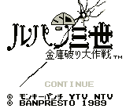

SD Lupin 3rd (VGB)

This is a puzzle game. You guide Lupin to find the treasure on the level.
You must avoid Zenigata and other enemies; along the way you can find help
from Jigen, etc.
The graphics are not that great, but the puzzles are interesting to solve.
Overall, it is not a very good game (but I like it because I am a HUGE Lupin
fan).
Lupin III: The Castle of Cagliostro (MSX)
To play this game, copy the LDR file to a 720KB formatted disk. Start
fMSX with the "-disk a:" option and type RUN"LUPIN.LDR" when the MSX-Basic
screen appears. You'll then get 2 questions. The first is "Monitor or
TV". You should always choose 0 (Monitor), because it's a Japanese game
and thus written for 60Hz NTSC. (Choosing TV will just slow down the
game by 10%.) The second question is a lot more useful. For the normal
game choose 0, choosing 1 gives you unlimited lives in Castle of
Cagliostro.
The game has 8 stages. To finish a stage you have to find the two rings
and the exit. There are a number of items to be found, like bullets and
flashlights. In the top of the screen is a bar called "CUP"; when you
pick up green (small) or red (big) cups of noodles it'll grow. When you
find a hotwater-kettle your life will be (partially) renewed, depending
on the amount of CUP aquired.
Stage 1: First of all, hit all goatheads (some contain hidden
items). One of the hidden items is a rocket with a rope attached so
you'll be able to go up in the upper room. Stand under the recess in the
wall and press UP and A-button (spacebar). The rocket is now launched and
your a level higher. Stand under the big goathead and jump (with B-button
or GRAPH-key).
Stage 2: Hit all the busts to open the trap-door in the rightmost
room. Of course, you'll have to hit all the goatheads too. There are also
hidden items behind the lights. In the cellar, hit the chests on the left
for extra items. At the big goathead, go up (you found another rocket if
you've done everything right), take everything and go back to the goathead
and jump under it. In principle all the other stages are finished
similarly. -- from Patriek Lesparre
| Level |
Password |
| 2 |
R K V D D M F I V D |
| 3 |
F M M F H D F N W R |
| 4 |
W D M F S F M O K A |
| 5 |
V T Q D M D F J F A |
| 6 |
P V J M E E J M U F |
| 7 |
E E Q V F M W L O A |
| 8 |
W W S O M P O J F O |
Lupin III: The Legend of the Gold of Babylon (MSX)
To play this game, copy the LDR file to a 720KB formatted disk. Start
fMSX with the "-disk a:" option and type RUN"ARSENE.LDR" when the
MSX-Basic screen appears. You'll then get 2 questions. The first is
"Monitor or TV". You should always choose 0 (Monitor), because it's a
Japanese game and thus written for 60Hz NTSC. (Choosing TV will just slow
down the game by 10%.) The second question is a lot more useful.
For the normal game choose 0, choosing 1 gives you immortality. -- from
Patriek Lesparre
Hints and Tips
- Pressing UP and B-button (GRAPH-key) will change your bubble-ammo.
The special ammo can be aquired by killing enemies.
- When you fall in the room with the flames, you must destroy the
flames by shooting bubbles at them, when you hold out long enough you'll
get a reward and be bounced back up again.
- Items will pop up when you pass certain points or jump at the right
places. Some of these will start a bonus game with Jigen or Goemon.
Return to Emulator Table of Contents
Last Modified 18 March 1997
Created 2 Sept 1996
Luis A. Cruz
cruzl@ccs.neu.edu